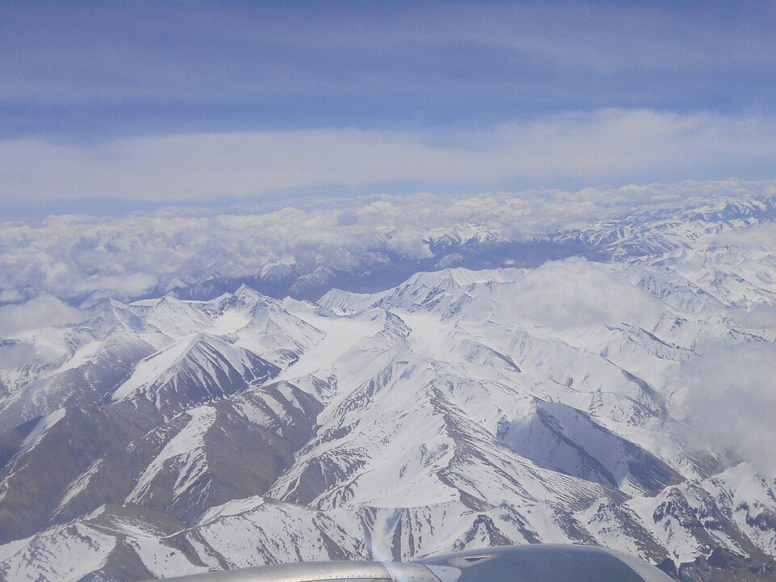

Montañas y cordilleras
Del Everest a los Andes: cómo nacen las montañas, las cumbres más altas de cada continente y por qué el Himalaya sigue creciendo.


Las grandes cordilleras nacen del choque de las placas tectónicas. Cuando dos placas se empujan, la corteza se arruga y se levanta como una alfombra que se arrastra contra la pared. Los volcanes forman otras montañas, como el Teide o el Kilimanjaro.
El techo del mundo
El Everest (Chomolungma en tibetano, Sagarmatha en nepalí) mide 8.849 metros, según la medición conjunta de China y Nepal de 2020. Está en el Himalaya, la cordillera que se formó al chocar la India contra Asia hace unos 50 millones de años. La India sigue empujando unos 4-5 cm al año, y el Himalaya crece alrededor de medio centímetro anual, aunque la erosión lo desgasta.
En la cima hay rocas calizas con fósiles de animales marinos: hace 450 millones de años, aquella roca era el fondo de un mar.
El Everest fue escalado por primera vez el 29 de mayo de 1953 por el neozelandés Edmund Hillary y el sherpa Tenzing Norgay. Hoy lo han coronado más de 6.000 personas, y en las temporadas buenas se forman colas cerca de la cumbre.
Los catorce ochomiles
Solo hay 14 montañas de más de 8.000 metros, todas en el Himalaya y el Karakórum. La segunda es el K2 (8.611 m), mucho más difícil y peligrosa que el Everest. El primero en subir los catorce fue el italiano Reinhold Messner, en 1986; el primer español, Juanito Oiarzabal, en 1999, y la primera mujer reconocida sin discusión, la española Edurne Pasaban, en 2010.


Las cumbres de cada continente
| Continente | Montaña | Altura |
|---|---|---|
| Asia | Everest | 8.849 m |
| América | Aconcagua (Argentina) | 6.961 m |
| África | Kilimanjaro (Tanzania) | 5.895 m |
| Europa | Elbrús (Rusia) / Mont Blanc | 5.642 m / 4.806 m |
| Antártida | Macizo Vinson | 4.892 m |
| Oceanía | Puncak Jaya (Nueva Guinea) | 4.884 m |
Escalarlas todas es el reto de las siete cumbres.
Récords que dependen de cómo se midan
- La montaña más alta desde su base es el Mauna Kea, en Hawái: mide unos 10.200 metros desde el fondo del océano, aunque solo asoma 4.207 sobre el agua.
- El punto más alejado del centro de la Tierra es la cima del Chimborazo, en Ecuador, porque la Tierra está achatada y abultada en el ecuador.
- La cordillera más larga es la de los Andes: unos 7.000 km a lo largo de Sudamérica. Pero la cordillera mayor de todas está bajo el mar: la dorsal oceánica, de 65.000 km.
Las montañas de España
España es el segundo país más montañoso de Europa, después de Suiza.
- El pico más alto es el Teide (3.715 m), en Tenerife: un volcán que, medido desde el fondo del mar, supera los 7.500 metros.
- En la península, el Mulhacén (3.479 m), en Sierra Nevada, seguido del Aneto (3.404 m), el techo de los Pirineos.
- Los Picos de Europa forman el primer parque nacional de España, creado en 1918 (entonces, de la montaña de Covadonga).
Vídeos para entenderlo mejor
- Los paisajes de montaña y de llanura. EL RELIEVE⛰| Vídeos Educativos para NiñosHappy Learning Español · 1,4 M visualizaciones
Los vídeos son de YouTube y de sus autores. Se cargan solo al pulsar sobre ellos. Ver todos los vídeos →